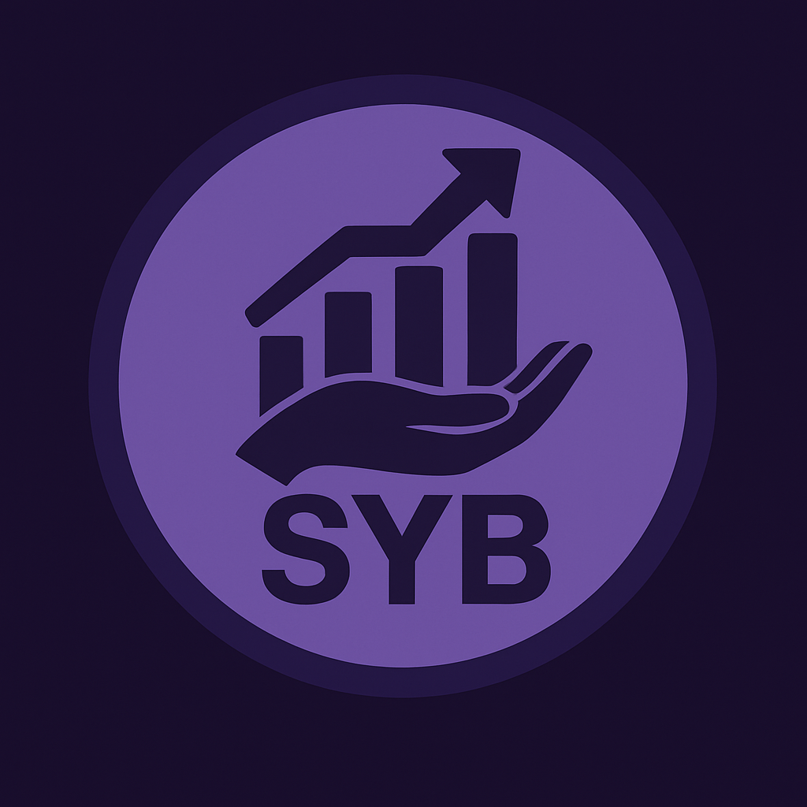

S.Y.B. - Save Your Business
Gestão descomplicada para quem faz acontecer.
O SYB nasceu para transformar a vida do autônomo brasileiro! Nossa missão é simplificar a gestão financeira e potencializar sua autonomia com tecnologia de ponta.
Gerencie entradas, saídas e tenha relatórios claros do seu negócio.
Automatize tarefas e receba insights inteligentes para crescer.
Seus dados protegidos com as melhores práticas do mercado.
Ferramentas pensadas para a rotina e o sucesso do trabalhador independente.
Gestão descomplicada para quem faz acontecer.